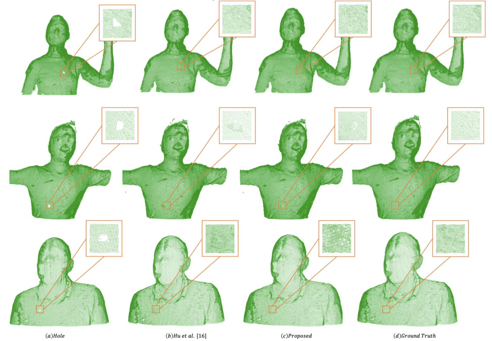
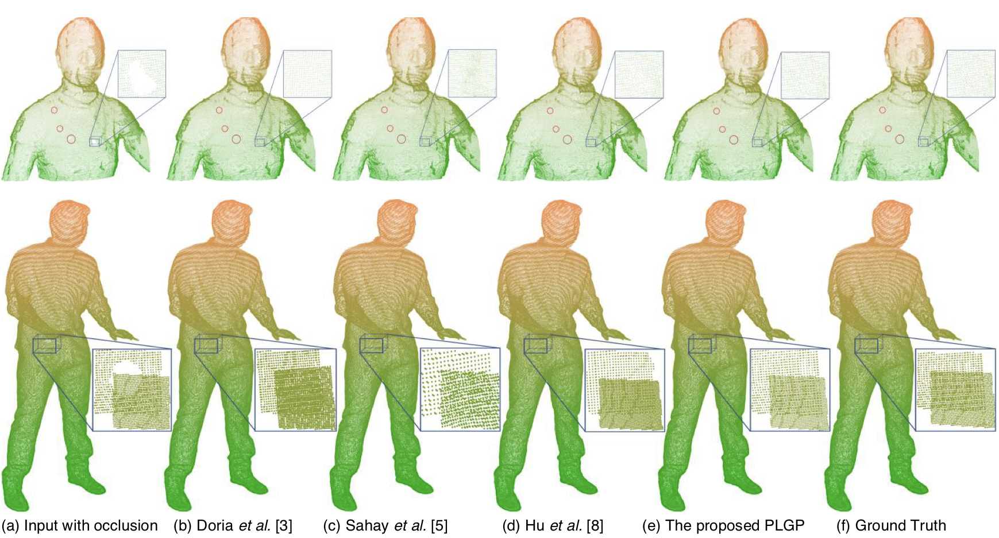
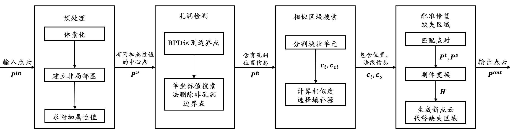

Bio
I am currently a senior student majoring in Electronic and Information Engineering at Peking University, China.
My research interest lies in imaging system and digital signal processing.
My pursue is to depict better virtual world throughing observing and capturing the real world.
Publications

Point Cloud Inpainting with Normal-based Feature Matching
Multimedia Systems
Y. Shi, C. C. Yang

PLGP: Point Cloud Inpainting with Patch-based Local Geometric Propagating
The Visual Computer
Y. Huang, C. C. Yang, Y. Shi, H. Chen

A method and device for signal repairment and enhancement
202110172219X
Y. Shi